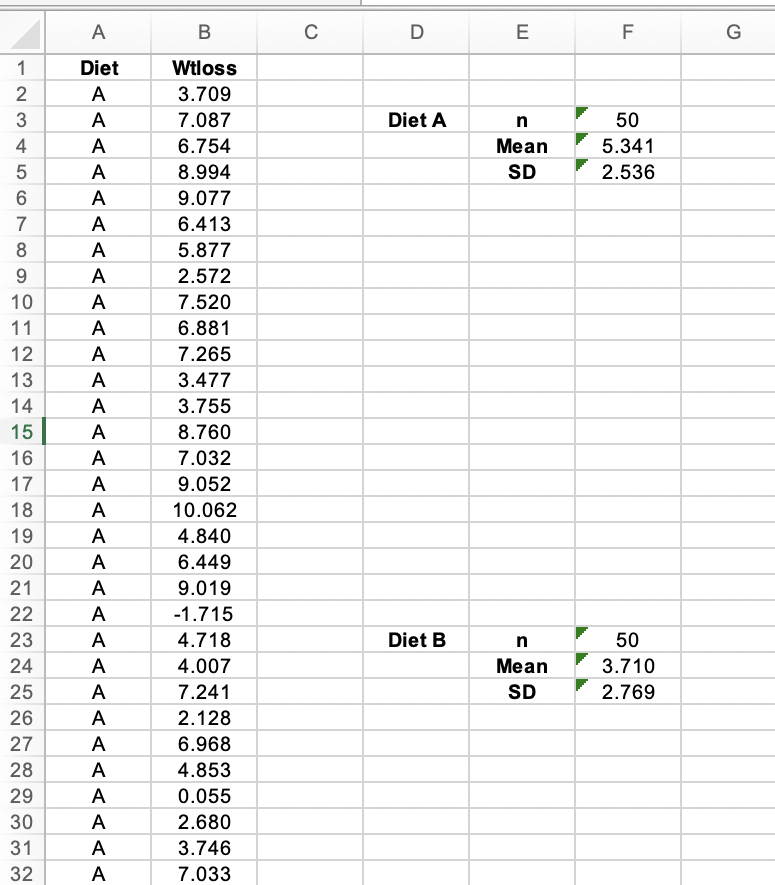
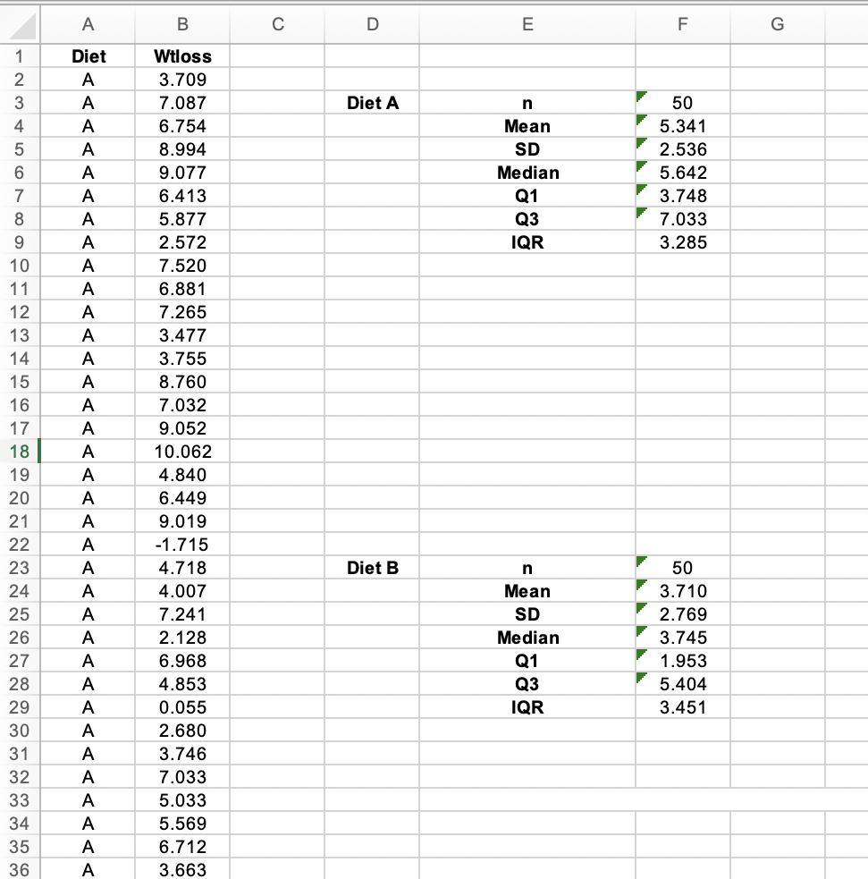
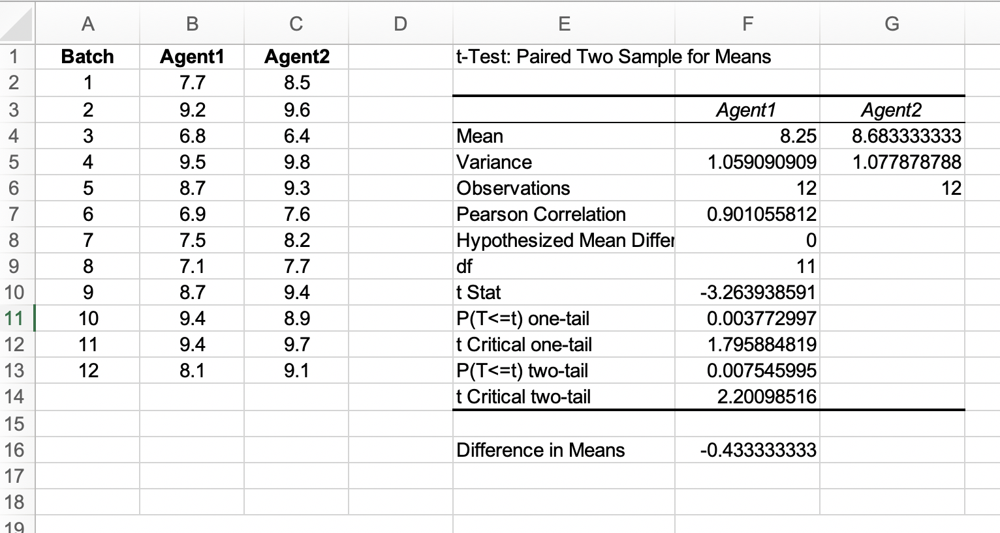
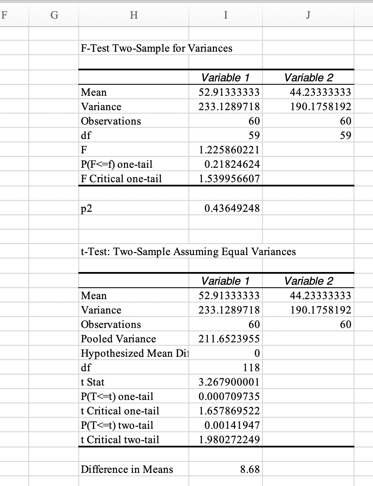

Unit 8 - Inferential Statistics
Excercise 8.1B
Evidence

Observations
Overall, on average the dieters following diet A lost more weight than those following diet B as the mean for diet A was 5.342 compared with only 3.710 for diet B therfore suggesting it is a more effective diet.
However the standard deviation for diet A is also smaller than diet B meaning there is a smaller spread of results and more dieters had a positive weightloss within the range than those on diet B. Also confirming it is a more effective diet.
Excercise 8.2B
Evidence

Observations
The interquartile range shows the spread of the middle half of the distribution for both diet A and diet B. As the IQR is higher for diet B it suggests a larger range of weightlosses between the lower and upper quartiles. This further demonstrated that diet A is more effective as the IQR will sit more around the median figure which is higher for diet A meaning more people with on diet A had on average a larger weightloss than those on diet B.
Excercise 8.4G
Evidence

Observations
The samle mean number of impurties present after filtration was 8.25 (parts per 1000) for Agent 1 and 8.68 (parts per 1000) for Agent 2. The data therfore has found significant evidence that Agent 1 resulted in less impurities being left in the product and was therfore a better filter agent by 0.43 (parts per 1000) and should be the Agent chosen for filtration as it is more effective at removal.
Based on a one tailed test of Agent 1 the results show that t= -3.264 with 11 degrees of freedom and the associated one tailed p-value is p=0.004. The obsereved p value is significant although a higher level of significance was obtained with the one tailed test.
Excercise 8.6C
Evidence

Observations
The sample variances for male and female are 233.129 and 190.176 retrospectivly. The observed F test statistic is 1.226 with 59 and 59 degrees of freedom giving a two tailed p-value of p=0.436. The F ratio is not significant therefore the data is consistent with the assumption that the population variances underlying the income between male and female do not differ and are independant.
The data shows that the mean income for Males was 52.91 (in £000s) and for Females was 44.23 (in £000s) therfore meaning mens income was higher by an estimated mean of 8.68 annually (in £000s)